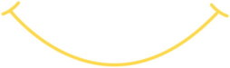

Определенный артикль в английском языке
В предыдущем уроке мы поговорили подробно про неопределенный артикль, а в этом поговорим про определенный. Но сначала разомнёмся и подытожим уже встречавшиеся нам притяжательные местоимения. Слева колонка с уже давно известными нам личными местоимениями, а справа соответствующие им притяжательные местоимения в обычной форме (есть ещё и самостоятельные формы, но мы с ними пока не сталкивались, поэтому не будем перегружать урок)
| Личные | Притяжательные местоимения | |
| I | my | мой |
| we | our | наш |
| you | your | ваш/Ваш/твой |
| he | his | его |
| she | her | её |
| it | its | его, её |
| they | their | их |
Examples /ɪg'zɑːmplz, eg-/ Примеры:
This is our new flat. – Это наша новая квартира.
How was your day? – Как прошёл (досл.: был) твой день?
This is his car and that is her car. – Это – его машина, а та – её машина.
Give this to him and give that to her. – Дай это ему, а (э)то дай ей.
My dog likes to play with its tail. – Моей собаке нравится играть со своим хвостом.
Cats find their way home. – Кошки находят (их, свою) дорогу домой.
Notes:
- Притяжательное местоимение ‘her’ по форме совпадает с личным местоимением-дополнением ‘her’.
- Притяжательные местоимения могут быть переведены на русский язык словами ‘свой, своя, свои и т.п.’, либо совсем не переведены на русский язык (последний пример), в зависимости от того, как они используется в разных ситуациях. В английском же и ‘свой’, и ‘его’ (например) должны быть переведены только одним словом ‘his’. Ранее вы уже встречались с подобными ‘проблемами’ при переводе.
Притяжательные местоимения ставятся чаще, чем в русском языке, потому что перед существительными должны быть разного рода ‘указатели’. В данном случае мы указываем ‘чей’ это объект, и существительное становится нам ‘понятным’ (точнее понятным для англичан...). В уроке про глагол ‘to be’ мы использовали для этого указательные местоимения. Но не всегда нужно и можно использовать указательные и притяжательные местоимения, поэтому в дело вступают артикли. Неопределенный артикль указывает на пока неизвестный нам объект, а определенный указывает на известный или понятный из контекста объект. Кстати, определенный артикль произошел от указательного местоимения ‘that’. Итак, правила:
Определенный артикль the используется в том случае, когда "мы знаем который из них", потому что вещь или человек:
- уникален (или уникален в данном контексте).
The president of Russia (= он такой один)
I go to the garden at weekends. (the garden – сад, который мне принадлежит) - упоминался ранее.
Mr. Bliss lives in a house. The house has a tall room. - определяется фразой, которая следует за ним.
Thank you for the advice you give me. (Спасибо за советы, которые ты мне даёшь.)
Определенный артикль the обычно произносится как /ðə/, но перед гласными он будет произноситься как /ðɪ/ (‘the advice’ выше, и озвученный ‘the ancient’ ниже).
Определенный артикль может стоять и перед единственным числом, и перед множественным числом, перед исчисляемыми существительными и перед неисчисляемыми. Но может и не стоять, например:
Do you like sport? Ты любишь спорт?
Неопределенный артикль здесь нельзя ставить, т.к. ‘спорт’ неисчисляемый. А если ставить определенный, то надо будет сразу уточнять о каком спорте речь, потому что будет иметься в виду какой-то конкретный спорт. Поэтому получается, что говорится о спорте в общем. В таких ‘общих’ случаях оба артикля вполне логично не ставятся.
Артикли не ставятся перед именами или названиями. Однако, есть очень много исключений, о которых мы пока говорить не будем, чтобы не перегружать урок, а поговорим про особые случаи с таким простыми словами, как bed, school, work и др.
Мы уже знаем некоторые фразы, в которых почему-то нет артикля. Например, to go to bed (идти спать), to watch TV (смотреть телевизор). Если к ним добавить определенный артикль, то получится: to go to the bed (идти к кровати), to watch the TV (смотреть на телевизор, т.е. на физический объект, а не то, что показывают по телевизору). В первом случае у нас обобщенная идея присутствует, а во втором у нас конкретика появляется, т.е. примерно тот смысл, о чем мы говорили в теории, хотя догадаться будет сложно.
Аналогично будет и с некоторыми социальными институтами, например: school (школа), university (университет), hospital (больница), prison (тюрьма), church (церковь). Если перед ними не ставить артикль, то о них будет идти речь как об учреждениях, предназначенных для определенной цели: учиться, лечиться и др. Если же перед ними поставить определенный артикль, то получится, что речь будет идти о здании (конкретном объекте). С учёбой у нас уже были примеры в предыдущих уроках. Поэтому будьте внимательны, когда вдруг будете говорить на английском, что вы идёте в hospital (будете пациентом) или в the hospital, в prison (станете заключенным) или в the prison (просто по каким-нибудь ‘делам’...).
Также есть некоторые фиксированные фразы: at home (дома), at work (на работе), go home (идти домой), go to work (идти на работу) и многие другие.
Examples:
It’s time1 for you to go to school. – Тебе пора идти в школу. (досл.: это есть время для тебя идти в школу, как ученику)
Go to the school to see2 if he is still there. – Сходи в школу (в здание школы), чтобы удостовериться (досл.: посмотреть) там ли он ещё.
She’s in hospital at the moment3. – В данный момент она в больнице. (как пациент)
Her husband goes to the hospital to see4 her every afternoon. – Каждый день её муж ходит в больницу, чтобы повидаться с ней.
Notes:
- ‘it’s time’: пора; пришло время.
- ‘see’: понимать, знать. ‘See’ иногда имеет значения, характерные для других глаголов (understand понимать и know знать), но смысл исходит от того, что кто-то что-то ‘увидел’ и ‘понял, осознал’. В данном примере кто-то должен пойти в школу, чтобы ‘увидеть’ и тем самым ‘узнать’ там ли он ещё. Частый вариант использования: I see = я понимаю (понял) или I see that now = теперь я понимаю / понял / осознал / увидел.
- ‘at the moment’: в данный момент. Определенный артикль как раз-таки подчеркивает, что в текущий конкретный момент, без него фраза будет неправильной.
Предлог ‘at’ сложно перевести каким-то одним русским предлогом, часто он обозначает нахождение в некоторой точке пространства и ему соответствуют: у, в, за, на. Ударение на него обычно не падает, поэтому он читается как /ət/. - ‘to see’: чтобы увидеть/повидаться/навестить. Вы уже часто видели, что частица ‘to’ почему-то переводится как ‘чтобы ...ть’. Отчасти это потому, что в английском есть такие конструкции, что нам не нужно наше ‘чтобы’, чтобы (извиняюсь за тавтологию) поставить фразу в инфинитив. Однако, также это потому, что ‘to’ иногда является сокращением полной фразы ‘in order to...’, где ‘in order’ /'ɔːdə/ и является нашим ‘(для того,) чтобы’. Часто полная фраза ‘in order to...’ не нужна, но для сложных письменных сочинений самое то.
В этом уроке мы прочитаем адаптированный отрывок из первой части книги Льюиса Кэрролла "Приключения Алисы в стране чудес". Как и в прошлом уроке, нам будут встречаться новые объекты, перед которыми будет стоять неопределенный артикль. После того, как объект станет нам известным, перед ним нужно уже ставить определенный артикль. Это мы уже знаем. Также можно будет встретить правило ‘определяется фразой, которая следует за ним’. А пример ‘уникальности’ объекта можно увидеть в тексте предыдущего урока.
Alice in Wonderland
Алиса в стране чудес
Down the Rabbit Hole
Вниз по кроличьей норе
Alice falls into a long, low1 hall. She doesn’t see the way out of it. Suddenly, she sees a little table in the middle of the hall. The table is made of2 glass and has three legs. Alice goes to the table and finds a little bottle on it. The bottle has a paper label on it with the words "Drink Me."
Alice looks at it first to see if it has the word "Poison" on it too3. She is a smart little girl. Luckily, the label doesn’t have the word "Poison" on it, so Alice takes the bottle and tastes it. The taste is very nice. Alice has a strange feeling because suddenly she becomes very small. She can see a little door now. Alice comes to the door and sees a beautiful garden through it, but the door is closed.
Alice looks for4 a way to open the door and sees through the glass table a little golden key on it. Alice tries to reach it, but she is too5 small now. She sits under the glass table and finds a little glass box. She opens the box and finds in it a very small cake with the words "Eat me"...
Notes:
- ‘low’: низкий. В противоположность к ‘tall room’, здесь ‘низкий зал’, т.е. зал с низким потолком. А если говорить конкретно о потолке – ceiling /'siːlɪŋ/, то низкий потолок это ‘low ceiling’, а высокий потолок это ‘high ceiling’.
- ‘is made of’: сделан из. ‘Made’, который многие знают по этикеткам на одежде, здесь является прилагательным, поэтому для связки перед ним стоит глагол ‘to be’.
- ‘too’: также. В данном значении обычно стоит в конце предложения или фразы.
- ‘looks for’: искать. ‘Look’ мы знаем как ‘смотреть, глядеть’, а с предлогом ‘for’ у него появляется значение ‘искать’.
- ‘too’: слишком. Может переводиться словом ‘очень’, подробнее ниже.
too и very
Вы уже знаете наречие ‘very’ со значением ‘очень’. ‘Too’ с похожим значением используется несколько иначе, часто с ним присутствует некоторый негативный оттенок. Примеры ниже можно перевести и со словом ‘очень’, но значение ‘слишком’ подходит для ‘too’ лучше. Если после его применения с прилагательным или наречием стоит глагол в инфинитиве, нам нужно будет начать перевод союзом ‘чтобы’ или другим более подходящим способом.
It’s too good to be true. – Это слишком хорошо, чтобы быть правдой.
His shoes are too big for him. – Его туфли слишком большие для него.
She speaks too fast for me to understand. – Она говорит слишком быстро для моего понимания (досл.: для меня, чтобы понять).
gold и golden
Нам уже встречалось слово ‘gold’ со значением ‘золото’, также у него есть и значение ‘золотой’, а в тексте появляется еще и ‘golden’, и у него тоже есть значение ‘золотой’. Проблема в том, что у них есть общее значение ‘сделанный из золота’, поэтому в некоторых случаях прилагательное ‘gold’ можно заменять прилагательным ‘golden’ без потери смысла, это можно сделать и в тексте, т.к. нет никаких подробностей о ключике. Кстати, у Буратино тоже ‘golden key’, а не ‘gold’. В более простых случаях разницу между ‘gold’ и ‘golden’ нужно проводить так:
Если вещь или предмет состоит из золота полностью, то мы используем ‘gold’, если не полностью или имеются в виду другие характеристики, а не состав, то ‘golden’. В этом случае для ‘golden’ есть еще перевод: ‘золотистый’. Также оба слова могут использоваться и в переносных значениях, поэтому запутаться в них легко.
Не забывайте, что ‘gold’ является и существительным ‘золото’, а ‘golden’ существительным не является, хотя в переводе на русский язык может и оказаться существительным, если того требуют особенности русского языка.
Pirates have a lot of gold on their ships. – У пиратов много золота на (их) кораблях.
The gold statue of Zeus was one of the seven wonders of the ancient world. – Золотая статуя Зевса была одним из семи чудес света древнего мира.
This girl has beautiful golden hair. – У этой девочки красивые золотистые волосы.
These were the golden moments of our lives. – Это были золотые мгновения нашей жизни. (досл.: наших жизней)
Speech is silver, silence is golden. Слово – серебро, молчание – золото. (досл.: речь – серебряная, молчание – золотое)
made of и made from
В зависимости от того, каким образом сделан объект, применяют либо предлог ‘of’, либо предлог ‘from’.
Если что-то строится, создается из природных материалов или готовых изделий: золота, кирпича, стекла и др. – используется предлог ‘of’. После изготовления материалы по-прежнему остаются золотом, кирпичом, стеклом и др. (сохраняют свою физическую форму)
Когда один продукт вырабатывается из другого варкой, жаркой, перегонкой и др., следует использовать предлог ‘from’ (из). После изготовления исходный материал превращается в новый продукт. (физическая форма материала меняется в процессе изготовления)
Вместо ‘made’ похожие предложения можно строить и с помощью глагола ‘make’. (‘Made’ является глаголом и причастием прошедшего времени от глагола ‘make’, но об этом подробнее чуть позже.)
Cheese is made from milk. – Сыр сделан из молока.
People make bread from flour. – Люди делают хлеб из муки.
The statue of Zeus was made of gold. – Статуя Зевса была сделана из золота.
This table is made of wood. – Этот стол сделан из дерева.
А вот с мебелью, видимо, изготовительный процесс сложнее, поэтому используют ‘from’:
A carpenter makes furniture from wood. – Столяр делает мебель из дерева.
К новому слову, фотографы говорят: Скажите ‘Сыыыыыыр’.
Say Cheese

Словарь
become /bɪ'kʌm/ становиться
bottle /'bɔtl/ бутылка
box /bɔks/ коробка
cake /keɪk/ кекс; пирожное; торт
cheese /ʧiːz/ сыр
church /ʧɜːʧ/ церковь
closed /kləʊzd/ закрытый
fall /fɔːl/ падать
feeling /'fiːlɪŋ/ ощущение, чувство
find /faɪnd/ находить
first /fɜːst/ 1) adv. сначала; 2) n., adj. первый
from /frɔm/ из, от, с
garden /'gɑːd(ə)n/ сад
gold /'gəʊld/ n. золото; adj. золотой
golden /'gəʊld(ə)n/ золотистый; золотой
hair /heə/ sing. волосы
hospital /'hɔspɪt(ə)l/ больница
husband /'hʌzbənd/ муж
label /'leɪb(ə)l/ этикетка, наклейка, бирка
leg /leg/ нога; лапа; ножка
look for искать
low /ləʊ/ низкий
made /meɪd/ adj. сделанный, изготовленный
moment /'məʊmənt/ момент, миг, мгновение
open /'əʊp(ə)n/ v. открыть adj. открытый
paper /'peɪpə/ n. бумага; adj. бумажный
president /'prezɪdənt/ президент
prison /'prɪz(ə)n/ тюрьма
rabbit /'ræbɪt/ кролик
reach /riːʧ/ дотягиваться, тянуться (к чему-л.)
shoe /ʃuː/ туфля
smart /smɑːt/ умный, разумный
sport /spɔːt/ спорт
suddenly /'sʌd(ə)nlɪ/ вдруг, внезапно, неожиданно
tail /teɪl/ хвост
taste /teɪst/ n. вкус; v. пробовать (на вкус)
through /θruː/ через, сквозь
too /tuː/ 1) также, тоже; 2) слишком; очень, сильно
try /traɪ/ пытаться
understand /ˌʌndə'stænd/ понимать
way /weɪ/ 1) путь; дорога; way out выход; выход из положения; 2) способ
word /wɜːd/ слово
Дополнительные слова:
bread /bred/ хлеб
carpenter /'kɑːp(ə)ntə/ плотник, столяр
ceiling /'siːlɪŋ/ потолок
flour /'flauə/ мука
in order to для того, чтобы
land /lænd/ земля, суша
luckily /'lʌkɪlɪ/ к счастью
poison /'pɔɪz(ə)n/ яд, отрава
silence /'saɪlən(t)s/ молчание
statue /'stæʧuː, -tjuː/ статуя
true /truː/ 1) правдивый, верный 2) подлинный, истинный; настоящий 3) правильно
university /ˌjuːnɪ'vɜːsətɪ/ университет
wonder /'wʌndə/ чудо
wonderland /'wʌndəlænd/ страна чудес
wood /wʊd/ n. дерево; adj. деревянный
Zeus /zjuːs/ Зевс
Упражнения
Упражнение 1. Вставьте определенный или неопределенный артикли, если в них есть необходимость, затем переведите предложения.
- They live in flat. flat is new and has good furniture. furniture is made from wood.
- She opens door and comes into room.
- house (мистера Блисса) has roof. roof is red.
- sun shines (светит) in sky.
- capital (столица) of England (Англии) is London.
- He looks out of window and sees beautiful garden.
- I wake up early in morning and go to bathroom.
- butter (масло) is made from milk.
- baker (пекарь) makes bread from flour.
- goldsmith (ювелир) makes ring of gold or silver.
- box has paper label on it with words "It’s time to play."
- Jack is captain (капитан) of ship.

Упражнение 2. Вставьте артикли или притяжательные местоимения. Переведите предложения.
- Mr. Bliss has hat. He has many hats. hats are tall and have different (разные) colours.
- parents go to school to have lunch with children.
- mother always shows (показывает) me how (как) to make food with hands (руками).
- Alice finds strange tall house, but she doesn’t see roof.
- She looks for way out and sees little table in middle of hall.
- Put (поднимите) hands up and try to reach sky.
- Jeff is in hospital at moment. Mary is wife. Mary goes to hospital every day to see husband.
- Suddenly Alice becomes very tall: legs, body (тело) and neck (шея) are very long now.
Упражнение 3. Переведите с русского на английский.
- Алиса видит стеклянную бутылку на столе, она берёт её и читает её этикетку: "Вредно (досл.: Плохой, плохо) для вашего здоровья (health)".
- Вкус яблок из её сада был приятным.
- Он ходит работать в церковь каждые выходные.
- Я не понимаю твоих слов, ты слишком умный.
- Он пытается открыть дверь, но она закрыта.
- Кролик живет в глубокой норе (hole) под землёй (ground).
- Книги сделаны из бумаги, а бумага сделана из деревьев.
- Возьми ключи (от) моей машины и отвези меня в больницу.
- «Ты слышишь их разговор?» «Да, (я слышу). Он о золоте и сокровищах».
- Моя кожа становится золотой, когда солнце остаётся в небе на (for a) очень долгое время.
- Эти туфли слишком маленькие для меня, а те слишком большие.
- «Ты хочешь быть президентом России?» «Нет, я не хочу становиться президентом, потому что у нас только один президент».
Упражнение 4. Вернитесь к тексту предыдущего урока и посмотрите на него с точки зрения определенного артикля. Какой из ‘объектов’ является уникальным? Не забывайте также, что вам нужно понимать тексты на слух, для этого их придется слушать много раз, предварительно прочитав их, понимая все слова.
Курс доступен в виде приложения на iOS и андроид (подробнее в уроке 1):